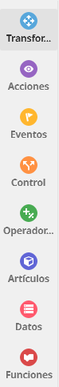

Una vez que accedes al editor de CoBlocks, verás una barra lateral con diferentes pestañas de colores. Cada una de estas categorías agrupa bloques específicos que te permitirán programar la lógica de tu mundo virtual:
- 🔵 Transformar: Contiene los bloques para modificar la posición física, rotación, escala o movimiento programado de los objetos en el espacio 3D.
- Acciones: Bloques dedicados a la comunicación y animación directa (hacer que un personaje hable con bocadillos, piense, cambie de animación o reproduzca un sonido).
- Eventos: Son los "disparadores" del código. Indican cuándo debe ejecutarse una acción (por ejemplo: "cuando se haga clic en el personaje", "cuando se pulse una tecla", etc.).
- Control: Bloques lógicos esenciales para gestionar el flujo del programa, como los bucles para repetir acciones de forma indefinida o las condiciones (si pasa esto, haz lo otro).
- Operadores: Bloques matemáticos y lógicos para realizar sumas, comparar valores, generar números aleatorios o combinar condiciones.
- Artículos: Permite interactuar con elementos específicos del catálogo, modificar propiedades del entorno o gestionar colecciones de objetos.
- Datos: El espacio dedicado a la creación y gestión de variables y listas para almacenar información (como puntuaciones, nombres o estados).
- Funciones: Sirve para agrupar bloques de código bajo un solo nombre, permitiéndote reutilizar bloques complejos sin tener que volver a escribirlos.